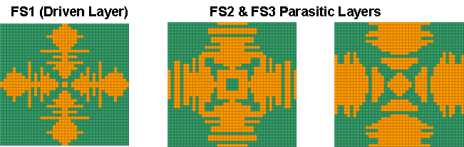
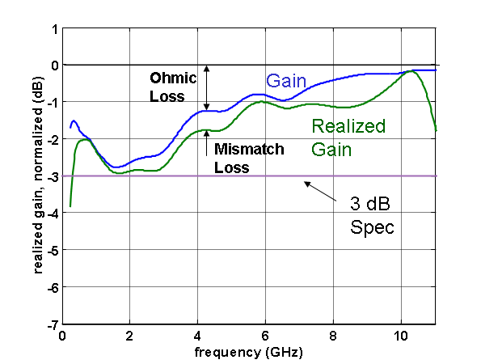
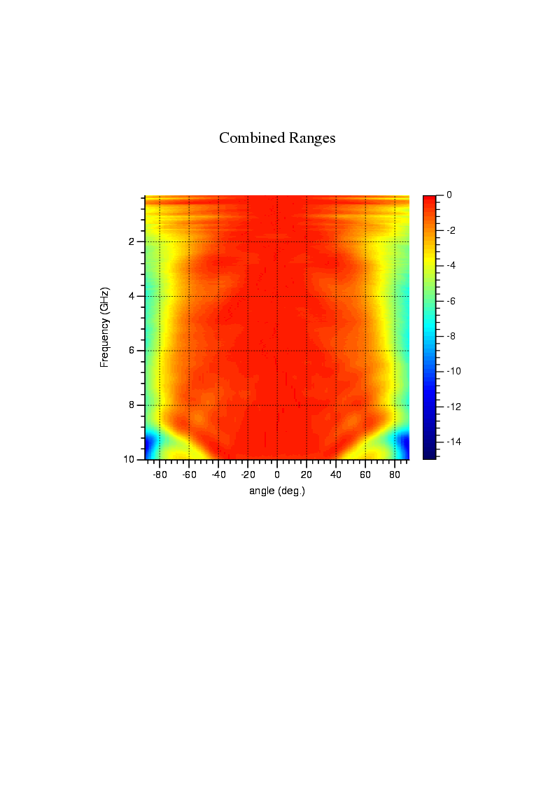
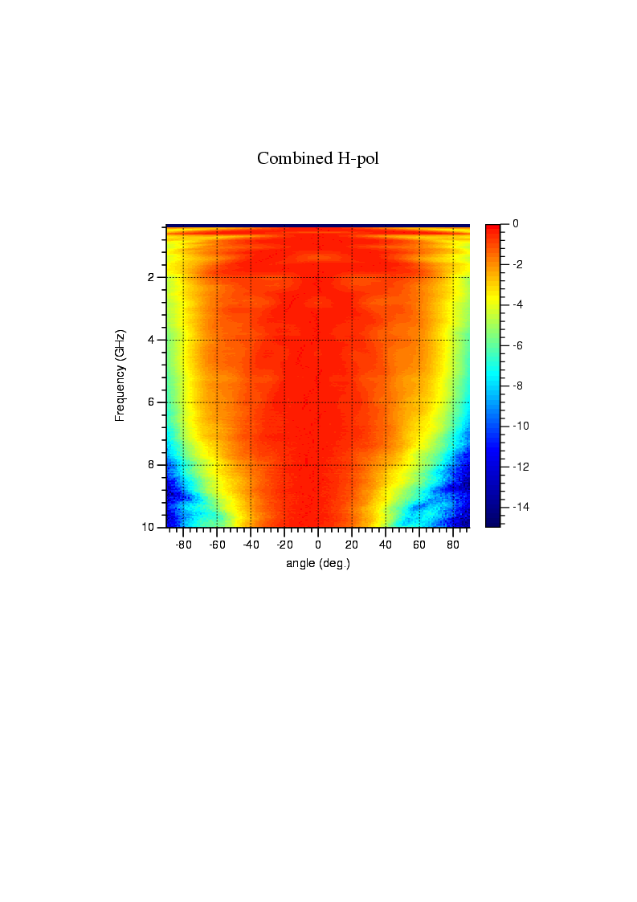

A single antenna from 0.3 to 10 GHz — and what came next.
In 2004 our team at Georgia Tech Research Institute fabricated and measured a fragmented-aperture phased array with 33 : 1 instantaneous bandwidth. It worked. Realized gain tracked the uniform-aperture limit, three independent ranges agreed, and there were no scan blindnesses across the design band.
Two things were not yet good enough: the upper octave lost scan volume, and the lossy backplane that absorbed the back-radiation limited the array to receive-only or low-power transmit. By 2011 we had retired both of those issues — and had moved fabrication onto laminated printed circuit boards. This page walks the worked example.
Why traditional design hits a low-frequency wall.
Classic phased-array design picks an element to meet the requirements (bandwidth, gain, polarization), picks a lattice spacing to avoid grating lobes, and hopes the element is smaller than the spacing so you have room to fit it. That hope is the low-frequency limit: element size sets the cutoff, and you can't shrink the element without shrinking the spacing and giving up grating-lobe headroom.
The fragmented-aperture / connected-array approach inverts the constraint. Instead of treating neighboring elements as a coupling problem, the optimizer is allowed to connect them. The low-frequency limit then scales with the size of the array, not the size of the element. The genetic algorithm we use to design the unit cell almost always discovers connectivity on its own when given the freedom to do so.

A 33 : 1 array, three ranges, no scan blindness.
The 2004 demonstrator was an 8 × 8 finite array, designed for 0.3 – 10 GHz and validated at three independent measurement facilities to triangulate the answer. The compact range covered 4 – 10 GHz, the anechoic chamber covered 0.5 – 10 GHz, and the outdoor far-field range covered 0.3 – 1 GHz — overlap on either side of every transition, so we could see if any one range was lying.

Three ranges, one curve.
The publishable result: across the 0.3 – 10 GHz band, the FDTD numerical prediction and the data from all three ranges fall on top of each other to within ~1 – 1.5 dB. There is no scan blindness, the embedded-element pattern is clean, and the realized gain tracks the uniform-aperture upper bound at better than 50 % efficiency across the band.
- Compact range — 4 – 10 GHz
- Anechoic chamber — 0.5 – 10 GHz
- Outdoor far-field range — 0.3 – 1 GHz
What was still wrong with it.
Upper-octave scan narrowing
The intended ±60° scan volume held across most of the band, but in roughly the top 10 – 20 % of frequency the volume collapsed to about ±40°. Customer-facing problem: the array works wide-band or wide-scan at the top of the band, not both.
Lossy backplane → receive-only
Most of the loss in the realized-gain curve was the lossy backplane required to support the cavity at low frequencies. That ohmic loss is fine for a receiver but disqualifies the aperture for high-power transmit.


From machined towers + foam to a laminated PCB stack.
The traditional fragmented-aperture build was a labor-intensive sandwich: PCB fragmented layers separated by foam spacers, suspended over a machined-aluminum ground plane by feed towers. Lightweight (a 0.6 m × 0.6 m array assembly weighed ~4 kg), but unappealing for mass production.
The 2011 paper introduced a simplified build: the entire antenna is laminated as a printed circuit board. Plated vias near the centre of each unit cell carry the differential feed. Surface-wave-suppression vias around the perimeter prevent the scan-blindness mode that thick-substrate stack-ups otherwise enable. Feed networks become layers in the same panel.
Sampling the scan volume during optimization, not after.
The reason the 33 : 1 array's upper octave narrowed is that the design optimizer only saw broadside performance with periodic-boundary FDTD. The scan volume was a side-effect, not a target. The 2011 design suite added a spectral-domain FDTD with periodic boundaries: essentially, the optimizer can now run a unit-cell simulation with a steered phase taper built in, and the genetic algorithm can score candidates against scan-angle performance directly.
A useful empirical observation drove the sampling strategy: scan problems show up at high frequency and large scan angle, not low frequency or boresight. So we weight the transverse-wavenumber sample set toward that corner of the scan volume.
Whole X-band element on a laminated PCB.
To prove the upgraded process, the 2011 paper designed a single element for the whole X-band (8 – 12 GHz) with a target ±60° scan volume, in the simplified PCB form factor. The lattice is sized so no grating lobes are allowed. The genetic algorithm uses 20 – 30 pixels across the unique quadrant of the unit cell, modified to use the new spectral-FDTD scoring described above.
For an embedded element in a 21 × 21 simulated finite array, the broadside realized gain is within ~0.2 dB of the uniform-aperture limit across the entire X-band. Embedded-element VSWR and scanned-array VSWR are both better than 2 : 1 — and they are not equal, because the scanned VSWR includes the mutual coupling that the optimizer is using to widen the scan volume. Scan volume exceeds 60° across the band, with some slight degradation in azimuth at the very top of the band (12 GHz).
What's portable to your problem.
MRS is the working continuation of the GTRI fragmented-aperture program — same principal, same modeling tools, same design instincts. If a fragmented-aperture-style aperture is on the table for your program, here is what an engagement could look like:
- Trade study — bandwidth, scan, polarization, and form-factor trades against your spec, with a candidate stack-up and a credible loss budget at the end.
- FDTD design pass — periodic-boundary or spectral-FDTD unit-cell optimization, plus an embedded-element check in a finite array.
- PCB or air-cavity build — choose the fabrication path that matches your power, cost, and integration constraints. We've done both.
- Range-correlation — anechoic, compact, and outdoor far-field measurements when warranted. We've coordinated all three on a single article.
Book chapter — W. F. Croswell, T. Durham, M. Jones, D. Schaubert, P. Friederich, and J. G. Maloney, "Wideband Arrays," Chapter 12 in Modern Antenna Handbook, C. A. Balanis (ed.), Wiley, Hoboken, NJ, 2008, pp. 581–630. DOI: 10.1002/9780470294154.ch12.
Original public presentation — J. G. Maloney, B. N. Baker, R. T. Lee, G. N. Kiesel, J. J. Acree, "Wide Scan, Integrated Printed Circuit Board, Fragmented Aperture Array Antennas," Military Antennas, 18–20 September 2006, Arlington, VA. Institute for Defense and Government Advancement (IDGA). Figures and measurement data on this page are drawn from the briefing at that event.
Peer-reviewed follow-on — J. G. Maloney, B. N. Baker, R. T. Lee, G. N. Kiesel, J. J. Acree, "Wide Scan, Integrated Printed Circuit Board, Fragmented Aperture Array Antennas," IEEE Int'l Symp. on Antennas & Propagation / USNC–URSI Radio Science Meeting (APSURSI), Spokane, WA, July 2011, pp. 1965–1968.
Foundational patent — U.S. Patent 6,323,809, "Fragmented aperture antennas and broadband antenna ground planes."
Bring us your spec — we'll tell you what's possible.
30-minute scoping call, no charge. Bring a band plan, scan envelope, or platform-integration constraint. We'll tell you whether a fragmented-aperture approach is the right tool, and what an engagement would cost.
Book a Scoping Call →